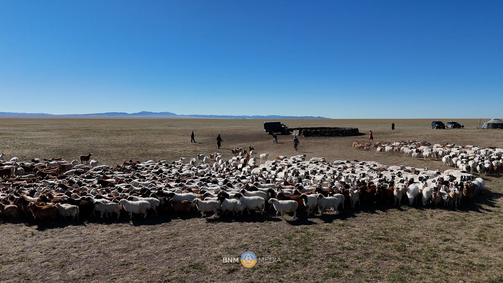
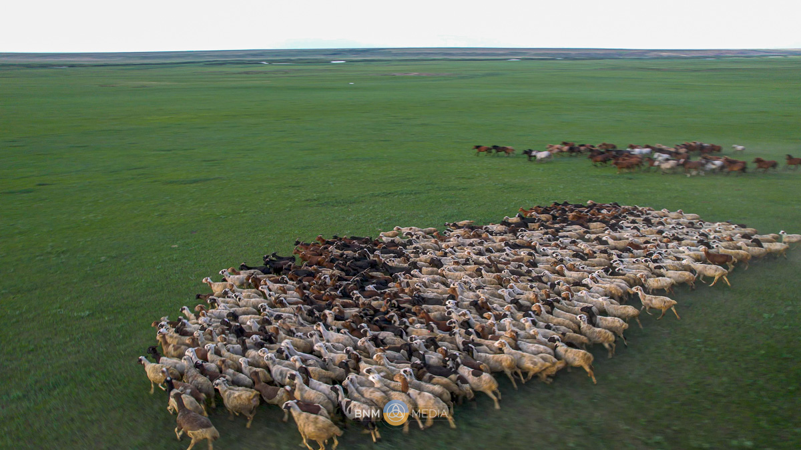
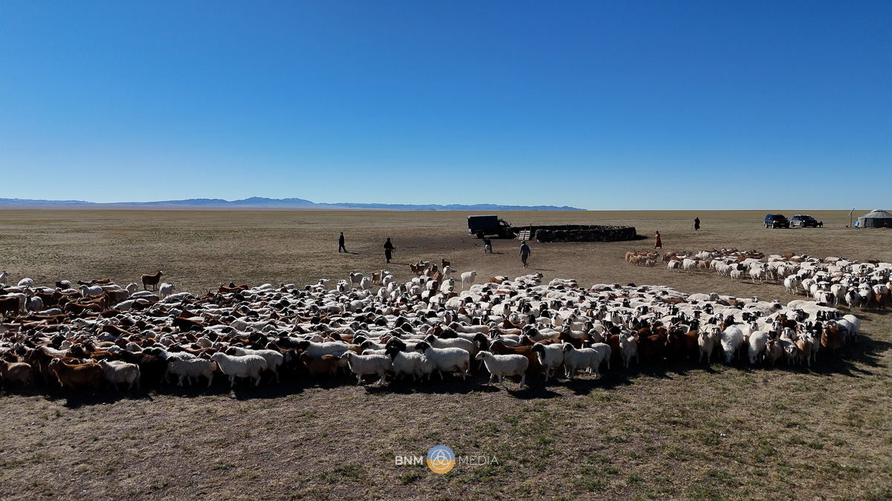
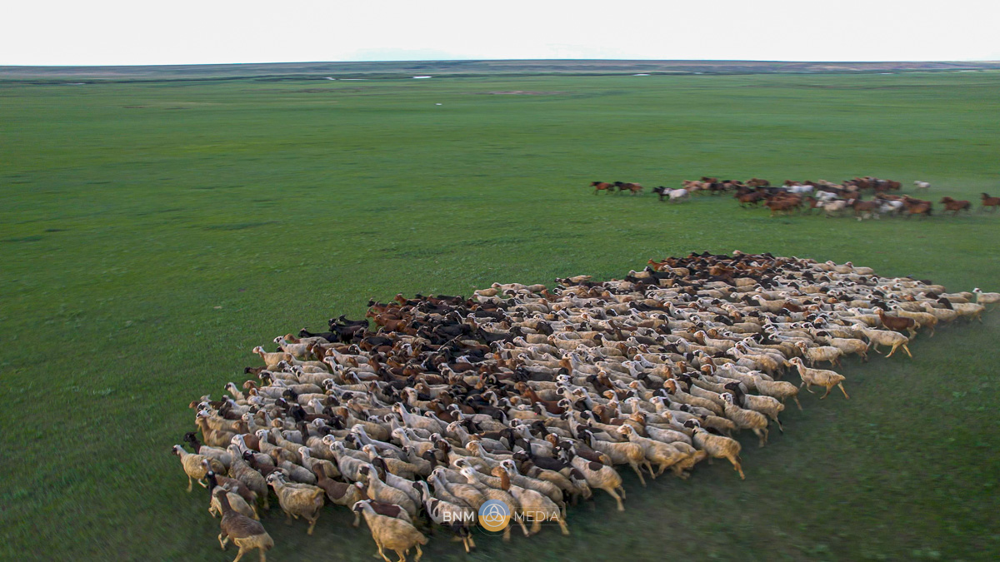

Horses are a big part of life in Mongolia. They’re not just animals but companions, and for centuries, Mongolians have depended on them for everything—from daily herding to long journeys across the steppe. The Mongolian horse might be small, but it’s incredibly tough, enduring the harsh winters and the scorching summers without much trouble. It’s this resilience that makes the Mongolian horse so special. Riding a Mongolian horse is also a cultural experience. There’s a deep connection between the rider and the horse, and Mongolians have mastered the art of horsemanship over centuries. Kids learn to ride from a very young age, and it’s common to see children as young as five racing horses during the Naadam festival. When you think about Genghis Khan and his empire, the Mongolian horse played a massive role. These horses carried his warriors across vast territories, often with little food and water. Their endurance and speed helped the Mongol cavalry become one of the most feared forces in history. In fact, many legends say that Genghis Khan’s horses could sense danger and even find their way back to their homeland after long journeys.

Beyond riding, horses also give much to the nomadic lifestyle. Mare’s milk, for instance, is fermented into airag, a traditional Mongolian drink enjoyed during the summer months. It’s refreshing, slightly sour, and a staple during festivals and gatherings. Herders also use horsehair to make musical instruments like the morin khuur (horsehead fiddle), an instrument deeply connected to Mongolian music and culture. In today’s Mongolia, while horses are still essential for herding, they’ve also become a symbol of pride and heritage. The annual Naadam festival celebrates the horse with long-distance races that test their endurance and strength, just as they did centuries ago.

Escape to
the Land of Stories
Uncover the Wonders of Mongolia! Sign up for our exclusive newsletter, and embark on a journey filled with captivating Destination highlights, intriguing Event updates, deep dives into Nomadic Culture, and fascinating nuggets of History. Stay connected with the heart of Mongolia – your gateway to a world of enriching experiences. Don't miss out – subscribe now for a regular dose of Mongolian magic!
Phone:
8001-4904
Email:
BraveNewMongoliaTours@gmail.com


 


